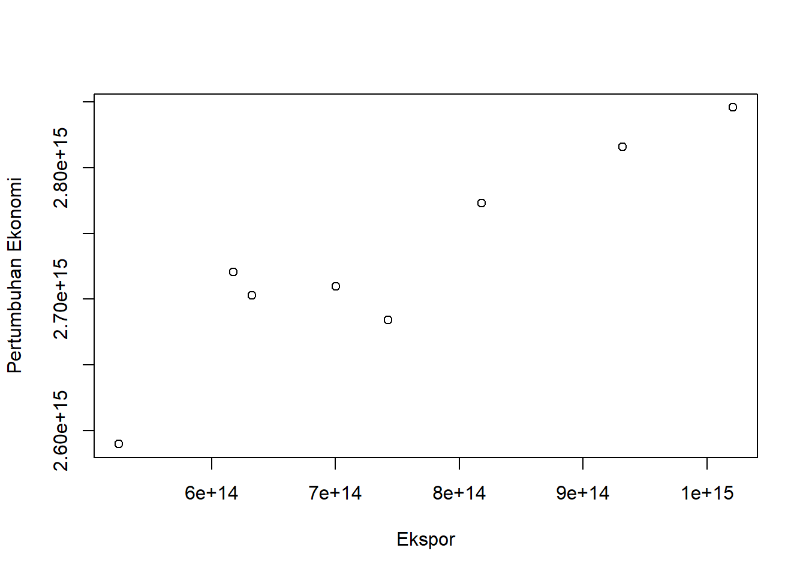
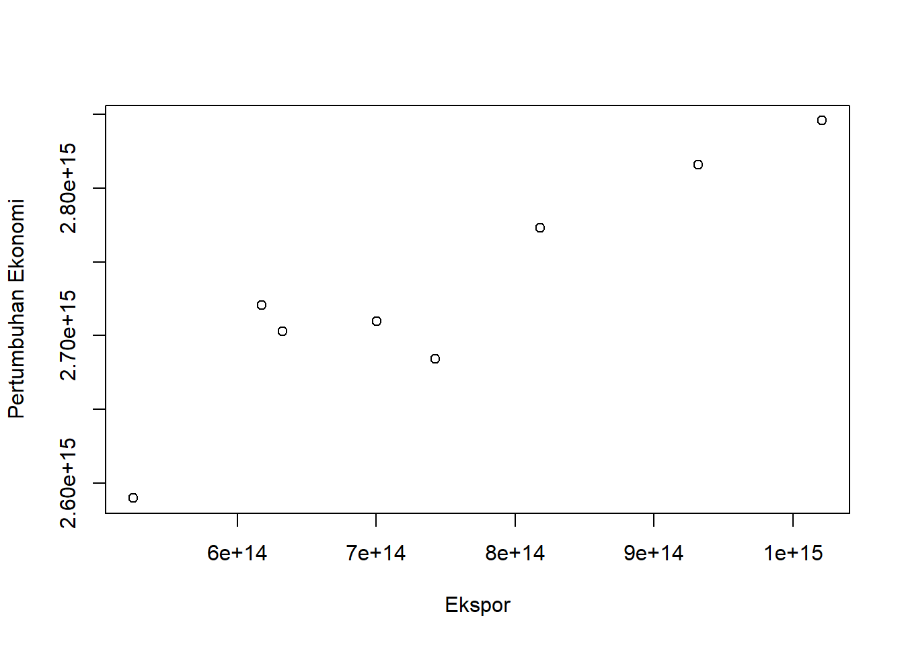
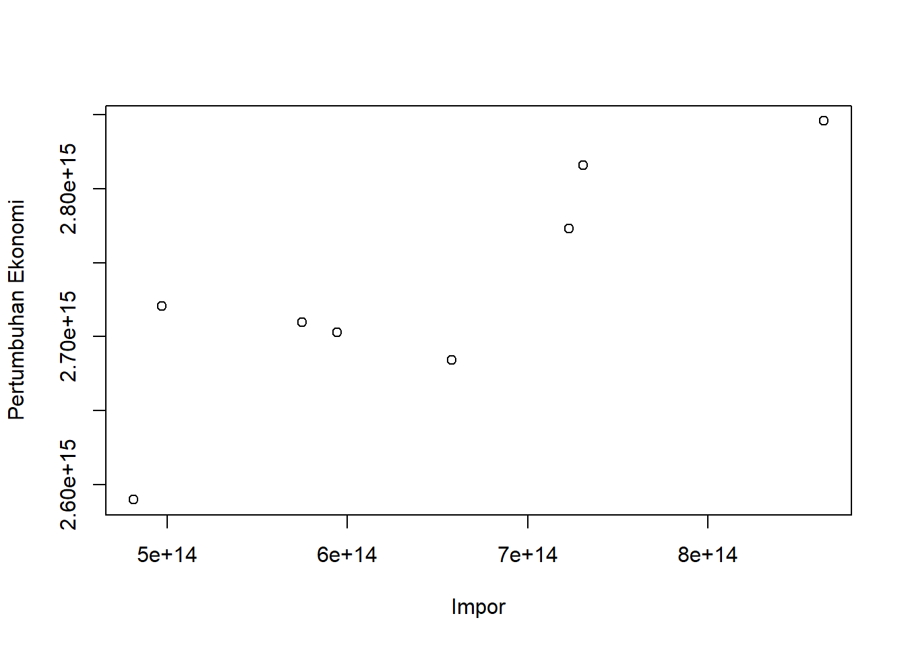
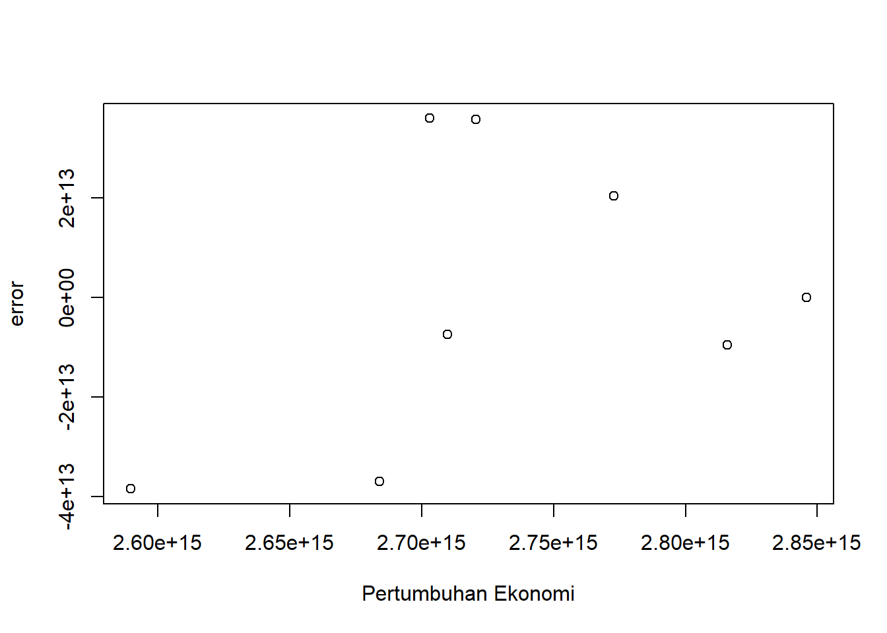

library('readxl')Warning: package 'readxl' was built under R version 4.2.2dat<-read_excel('latihan.xlsx')
reg1<-lm(Y~X+S,data=dat)
plot(dat$X,dat$Y,xlab="Ekspor",ylab="Pertumbuhan Ekonomi")
Metode Penelitian Politeknik APP Jakarta

Di saat ini pertumbuhan perekonomian suatu negara tidak bisa terlepas dari keadaan perekonomian dunia. Hubungan ekonomi suatu negara dengan negara lainnya menjadi aspek utama dalam pertumbuhan ekonomi suatu negara. Keadaan ini menimbulkan daya saing sebagai salah satu aspek yang memastikan dalam kompetisi antar negara supaya mendapatkan keuntungan dari terbukanya perekonomian dunia yang semakin luas. Keuntungan dari terbukanya perekonomian dunia yang semakin luas bisa dilihat dari kondisi neraca pembayaran suatu negara tersebut.
Bank Indonesia (BI) menyatakan neraca pembayaran merupakan catatan transaksi ekonomi antara penduduk Indonesia dengan bukan penduduk pada suatu periode tertentu. Suatu negara dikatakan surplus neraca pembayaran ketika terdapat kelebihan biaya perdagangan serta investasi dibanding kewajiban-kewajiban yang dibayarkan kepada negara, sebaliknya dikatakan defisit neraca perdagangan apabila impor lebih besar dari pada ekspor. Kondisi neraca pembayaran yang surplus ataupun defisit pada suatu negara dapat mempengaruhi pertumbuhan ekonomi di suatu negara tersebut.
Menurut Thirlwall (1979) menyatakan neraca pembayaran bertindak sebagai kendala pada tingkat pertumbuhan output. Peningkatan produksi dalam negeri karena terjadinya peningkatan impor dapat menyebabkan defisit pada suatu negara yang memungkinkan penurunan permintaan ataupun melemahnya nilai tukar riil. Suatu negara tumbuh lebih cepat ketika elastisitas pendapatan ekspor yang lebih besar daripada impor. Hal ini karena tidak ada negara yang tumbuh lebih cepat daripada tingkat pembayaran yang harus dibayarkan karena rasio utang luar negeri terhadap Pertumbuhan Domestik Bruto (PDB) yang tinggi menyebabkan runtuhnya kepercayaan internasional dan eksternal.
Pada tahun 2019 tepatnya di akhir tahun, dunia dikejutkan dengan kejadian yang diduga sebagai kasus pneumonia yang tidak diketahui penyebabnya berasal dari Kota Wuhan, China. Pada 7 Januari 2020, China mengidentifikasi pneumonia sebagai virus coronavirus. Sugarda & Rifky (2017) menyatakan dampak dari COVID-19 tidak hanya mengganggu sektor ekspor dan impor Indonesia, tetapi juga menyerang sektor perdagangan yaitu dari penerimaan pajak yang juga mengalami penurunan. Badan Pusat Statistik (BPS) merilis data terkait dengan ekspor migas dan non-migas yang menyebutkan terjadinya penurunan ekspor migas dan non-migas yang dampaknya ditimbulkan oleh pandemi COVID-19.
Penelitian ini meneliti bagaimana neraca pembayaran mempengaruhi pertumbuhan ekonomi di masa pandemi COVID-19 yang dianalisis pada penelitian ini neraca berjalan dalam Neraca Pembayaran Indonesia (NPI). Neraca berjalan yang diteliti pada penelitian ini adalah mengenai ekspor dan impor. Penelitian ini meneliti pengaruh ekspor dan impor terhadap pertumbuhan ekonomi Indonesia di masa pandemi COVID-19 menggunakan analisis regresi multivariat atau Ordinary Least Square (OLS).
Penelitian ini meneliti dan menganalisa pengaruh ekspor dan impor terhadap pertumbuhan ekonomi di masa pandemi COVID -19. Ruang lingkup penelitian adalah pada variabel-variabel yang berkaitan dengan judul penelitian yaitu ekspor, impor dan pertumbuhan ekonomi.
Berdasarkan latar belakang penelitian ini dapat dirumuskan beberapa masalah penting sebagai berikut:
Bagaimana pengaruh ekspor terhadap pertumbuhan ekonomi Indonesia di masa COVID-19?
Bagaimana pengaruh impor terhadap pertumbuhan ekonomi Indonesia di masa COVID-19?
Berdasarkan latar belakang dan rumusan masalah penelitian ini, maka penulis dapat memberitahukan tujuan dan manfaat penelitian sebagai berikut:
Dapat mengetahui pengaruh ekspor terhadap pertumbuhan ekonomi Indonesia di masa COVID-19; dan
dapat mengetahui pengaruh impor terhadap pertumbuhan ekonomi Indonesia di masa COVID-19.
Pertumbuhan Ekonomi
Sukirno (2011) menyatakan pertumbuhan ekonomi diartikan sebagai perkembangan kegiatan dalam perekonomian yang menyebabkan barang dan jasa yang diproduksi dalam masyarakat bertambah dan kemakmuran masyarakat meningkat. Jadi pertumbuhan ekonomi mengukur prestasi dari perkembangan suatu perekonomian dari suatu periode ke periode lainnya. Kemampuan suatu negara untuk menghasilkan barang dan jasa akan meningkat. Kemampuan yang meningkat ini disebabkan oleh pertambahan faktor-faktor produksi baik dalam jumlah dan kualitasnya. Investasi akan menambah barang modal dan teknologi yang digunakan juga makin berkembang. Di samping itu, tenaga kerja bertambah sebagai akibat perkembangan penduduk seiring dengan meningkatnya pendidikan dan keterampilan mereka.
Ekspor
Ekspor dapat diartikan sebagai pengiriman dan penjualan barang-barang dari dalam negeri ke luar negeri. Murni dalam Farina dan Husaini (2017) menyatakan bahwa ekspor adalah suatu kegiatan ekonomi menjual produk dalam negeri ke pasar di luar negeri. Keuntungan melakukan ekspor menurut Sukirno dalam Farina dan Husaini (2017) adalah dapat memperluas pasar, menambah devisa negara, memperluas lapangan kerja.
Impor
Impor merupakan pembelian dan pemasukan barang dari luar ke dalam negeri. Murni dalam Farina dan Husaini (2017) menyatakan bahwa impor merupakan kegiatan ekonomi membeli produk luar negeri untuk keperluan atau dipasarkan di dalam negeri. Kecenderungan kegiatan impor yang besar tidak sepenuhnya buruk bagi sebuah negara karena impor juga akan merangsang kegiatan investasi, apabila barang yang diimpor merupakan barang modal, barang mentah, barang setengah jadi untuk keperluan perindustrian.
Jenis data yang digunakan dalam penerlitian ini adalah data kualitatif. Data kualitatif adalah data non-numerik atau angka. Data ini biasanya berisi analisa kondisi saat ini pada organisasi sehingga membantu peneliti dalam menentukan permasalahan. Sumber data yang digunakan dalam penelitian ini adalah data sekunder. Data sekunder didapatkan dari studi dokumen dan jurnal- jurnal yang berkaitan dengan penelitian ini. Data tersebut diperoleh dari website BPS.
library('readxl')Warning: package 'readxl' was built under R version 4.2.2dat<-read_excel('latihan.xlsx')
reg1<-lm(Y~X+S,data=dat)
plot(dat$X,dat$Y,xlab="Ekspor",ylab="Pertumbuhan Ekonomi")
library('readxl')
dat<-read_excel('latihan.xlsx')
reg1<-lm(Y~X+S,data=dat)
plot(dat$S,dat$Y,xlab="Impor",ylab="Pertumbuhan Ekonomi")
library('readxl')
dat<-read_excel('latihan.xlsx')
reg1<-lm(Y~X+S,data=dat)
dat$u<-resid(reg1)
plot(dat$Y,dat$u,xlab="Pertumbuhan Ekonomi",ylab="error")
Penelitian ini menggunakan metode pendekatan yang bersifat kuantitatif. Sugiyono (2018) menyatakan bahwa data kuantitatif merupakan metode penelitian yang berlandaskan positivistic (data konkrit), data penelitian berupa angka-angka yang akan diukur menggunakan statistik sebagai alat uji penghitungan, berkaitan dengan masalah yang diteliti untuk menghasilkan suatu kesimpulan. Metode Deskriptif digunakan untuk membuat gambaran secara sistematis dan faktual mengenai gambaran perkembangan dari setiap variabel di dalam penelitian yaitu ekspor, impor dan pertumbuhan ekonomi Indonesia.Package yang digunakan pada penelitian ini sebagai berikut: readxl, tidyverse, dan WDI. Selanjutnya analisis regresi digunakan untuk menganalisis pengaruh harga ekspor, impor terhadap pertumbuhan ekonomi Indonesia di masa pandemi COVID-19. Dimana: \[ Y=\beta_0 + \beta_1 x_1 + \beta_2 x_2 + ... + \beta_j x_j+\mu \] di mana \(y_t\) adalah hwy dan \(x_t\) adalah cty.
Y = Pertumbuhan Ekonomi
\(X-1\)= Total Ekspor
\(X-2\)= Total Impor
\(mu\)= Error
Penelitian ini membahas mengenai pengaruh nilai ekspor dan nilai impor terhadap pertumbuhan ekonomi indonesia pada masa pandemi COVID-19. Data yang digunakan sebagai berikut:
| Tahun | Ekspor (Rp) | Impor (Rp) | PDB (000 Rp) |
|---|---|---|---|
| 2020 | |||
| KWT 1 | 632677095395542 | 594136886258954 | 2703033000000 |
| KWT 2 | 525124030614330 | 481361474575502 | 2589789100000 |
| KWT 3 | 617380618041373 | 497176716106985 | 2720491900000 |
| KWT 4 | 700201812713094 | 574718262843445 | 2709740800000 |
| 2021 | |||
| KWT 1 | 742560917028494 | 658047908513121 | 2684200800000 |
| KWT 2 | 818038264492185 | 722896863267202 | 2772939400000 |
| KWT 3 | 931827342531896 | 730762462735395 | 2815869700000 |
| KWT 4 | 1020753447406970 | 864210272582373 | 2845858600000 |
Hasil pengaruh jumlah ekspor dan jumlah impor terhadap pertumbuhan ekonomi diestimasi menggunakan regresi multivariat.Hasilnya ditunjukkan sebagai berikut:
library(readxl)
dat<-read_excel("latihan.xlsx")
reg1<-lm(Y~X+S,data=dat)
summary(reg1)
Call:
lm(formula = Y ~ X + S, data = dat)
Residuals:
1 2 3 4 5 6 7
3.607e+13 -3.849e+13 3.581e+13 -7.400e+12 -3.701e+13 2.048e+13 -9.494e+12
8
4.619e+10
Coefficients:
Estimate Std. Error t value Pr(>|t|)
(Intercept) 2.420e+15 6.716e+13 36.024 3.1e-07 ***
X 6.605e-01 2.895e-01 2.282 0.0714 .
S -2.869e-01 3.731e-01 -0.769 0.4767
---
Signif. codes: 0 '***' 0.001 '**' 0.01 '*' 0.05 '.' 0.1 ' ' 1
Residual standard error: 3.464e+13 on 5 degrees of freedom
Multiple R-squared: 0.8685, Adjusted R-squared: 0.8159
F-statistic: 16.51 on 2 and 5 DF, p-value: 0.006269Hasil di atas merupakan hasil estimasi OLS dengan menggunakan model regresi mutivariat. Hasil regresi tersebut digunakan untuk mengetahui hubungan antara variabel dependen dan variabel independen. Variabel dependen yang digunakan adalah tingkat pertumbuhan ekonomi (GDP) sedangkan Variabel independen yang digunakan adalah jumlah ekspor dan jumlah impor. Dari hasil regresi dapat dilihat bahwa jumlah ekspor berpengaruh positif terhadap pertumbuhan ekonomi. Dan jika dilihat hasil regresi dapat dilihat bahwa jumlah impor berpengaruh negatif terhadap pertumbuhan ekonomi.
Jumlah ekspor meningkat sebesar 1 persen maka akan meningkatkan pertumbuhan ekonomi sebesar 6.605e-01. Apabila jumlah ekspor menurun sebesar 1 persen maka akan menurunkan pertumbuhan ekonomi sebesar 6.605e-01.Hal tersebut sejalan dengan teori perdagangan internasional, apabila jumlah barang atau jasa yang di ekspor ke luar negeri semakin banyak maka di dalam negeri harus memproduksi barang dan jasa lebih banyak juga. Sedangkan jika di lihat pada hasil regresi jumlah impor berpengaruh negatif terhadap pertumbuhan ekonomi. Koefisien impor sebesar -2.869e-01 berarti apabila impor meningkat 1 persen maka akan menurunkan pertumbuhan ekonomi sebesar -2.869e-01 dan apabila ekspor menurun sebesar 1 persen maka akan meningkatkan pertumbuhan ekonomi sebesar 2.869e-01.
Kesimpulan
Berdasarka hasil penelitian ini, dapat disimpulkan bahwa jumlah ekspor dan jumlah impor berpengaruh signifikan terhadap pertumbuhan ekonomi. Hal ini berkaitan dengan teori perdagangan internasional, apabila jumlah ekspor meningkat dapat diartikan permintaan barang atau jasa dari negara lain mengalami peningkatan maka di dalam negeri harus memproduksi barang dan jasa lebih banyak juga. Kenaikan barang impor akan menaikkan barang produksi yang diimpor dari luar negeri sehingga produktivitas dalam negeri semakin menurun yang akan menurunkan pertumbuhan ekonomi dalam negeri. Untuk menggerakan roda perekonomian tentu diperlukan peningkatan produksi dalam negeri yang akan meningkatkan pertumbuhan ekonomi di Indonesia.
Saran
Berdasarkan hasil penelitian ini, dapat disimpulkan bahwa jumlah ekspor dan jumlah impor berpengaruh signifikan terhadap pertumbuhan ekonomi. Hal ini berkaitan dengan teori perdagangan internasional, apabila jumlah ekspor meningkat dapat diartikan permintaan barang atau jasa dari negara lain mengalami peningkatan maka di dalam negeri harus memproduksi barang dan jasa lebih banyak juga. Kenaikan barang impor akan menaikkan barang produksi yang diimpor dari luar negeri sehingga produktivitas dalam negeri semakin menurun yang akan menurunkan pertumbuhan ekonomi dalam negeri. Untuk menggerakan roda perekonomian tentu diperlukan peningkatan produksi dalam negeri yang akan meningkatkan pertumbuhan ekonomi di Indonesia.
Astuti, I. P., & Ayuningtyas, F. J. (2018). PENGARUH EKSPOR DAN IMPOR TERHADAP PERTUMBUHAN EKONOMI DI INDONESIA. Jurnal Ekonomi & Studi Pembangunan, 19(1), Article 1. https://doi.org/10.18196/jesp.19.1.3836
Badan Pusat Statistik. (n.d.). Retrieved January 20, 2023, from https://www.bps.go.id/exim/
Multivariat & Dummy regression. (n.d.). Retrieved January 20, 2023, from https://www.krisna.or.id/metopel/meeting3/index.html#/title-slide
Nasution, D. A. D., Erlina, E., & Muda, I. (2020). Dampak pandemi Covid-19 terhadap perekonomian Indonesia. Jurnal benefita, 5(2), 212-224.
Produk Domestik Bruto (PDB) | Satu Data Perdagangan. (n.d.). Retrieved January 20, 2023, from https://satudata.kemendag.go.id/data-informasi/perdagangan-dalam-negeri/produk-domestik-bruto
Wulandari, S., & Lubis, A. S. (2019). Analisis Perkembangan Ekspor Impor Barang Ekonomi di Provinsi Sumatera Utara. Jurnal Administrasi Bisnis, 8(1), 31–36. https://doi.org/10.14710/jab.v8i1.22403
Zulkipli, Z., & Muharir, M. (2021). Dampak Covid-19 Terhadap Perekonomian Indonesia. Jurnal Ilmiah Mahasiswa Ekonomi Syariah (JIMESHA), 1(1), 7-12.